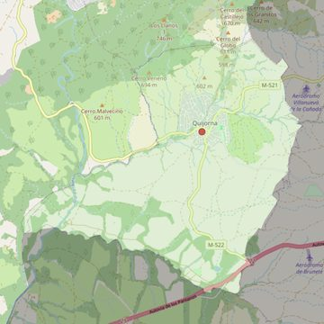

San Juan Evangelista
- Arciprestazgo
- Villaviciosa de Odón
- Población
- Quijorna
- Dirección postal
- Pza. de la Iglesia, 1
- Código postal
- 28693
- Extensión
- 25,73 km² (2.573 ha)
- Teléfono
- 916 140 007
- Correo electrónico
- sanjuanevangelista-quijorna@diocesisgetafe.es
- Información demográfica
- De la parroquia · De la población (Quijorna) · Del arciprestazgo (Villaviciosa de Odón)


Descargar mapaLímites según decreto
Los del término municipal